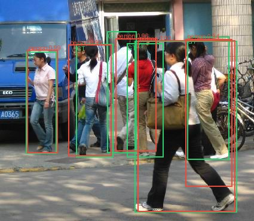
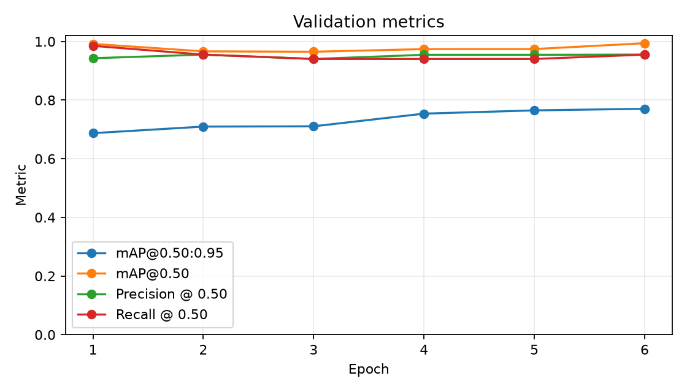
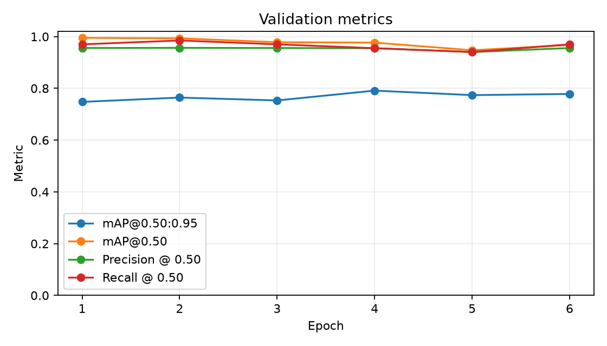
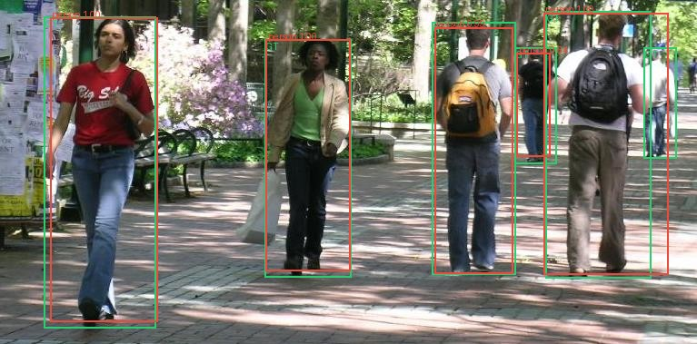
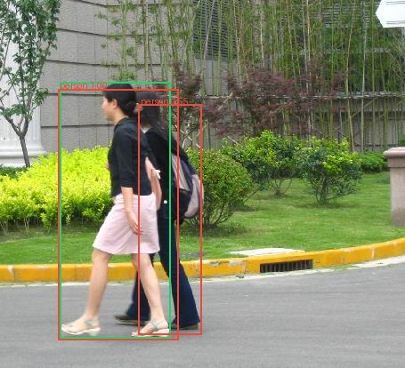
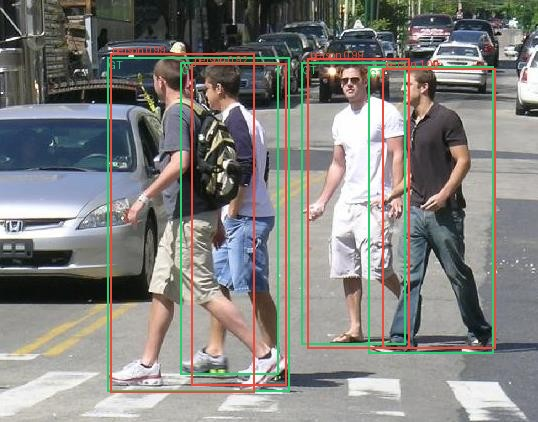

A detector that explains where it fails.
Faster R-CNN fine-tuned on 170 real street images, evaluated with COCO mAP, then interrogated image by image. Validation failures drove one controlled resolution experiment before a single held-out test.

Method
Seed 42 produced non-overlapping 119/25/26 image partitions. Training used only the train split. Checkpoint and threshold decisions used validation. The 26-image test split stayed outside the loop until the model-selection JSON froze a checkpoint digest and threshold.
- Download 170 paired images/masks; verify ZIP, layout, image readability, and hashes.
- Fine-tune Faster R-CNN MobileNetV3 Large FPN from COCO weights.
- Track loss, mAP, precision, recall, configuration, device, and duration in local MLflow.
- Match predictions by score and IoU; export structured FP/FN/localization evidence.
- Run one justified intervention, select on validation, evaluate test once.
Two controlled runs
The baseline used a 512–768 px resize. Visual inspection of its failures showed two crowded, occluded pedestrians with correct low-confidence boxes. Experiment 2 changed only resize bounds to 640–960 px.
| Validation metric | Baseline | Improved | Delta |
|---|---|---|---|
| mAP@0.50:0.95 | 0.7705 | 0.7913 | +0.0208 |
| mAP@0.50 | 0.9940 | 0.9768 | −0.0172 |
| Precision | 0.9559 | 0.9559 | 0.0000 |
| Recall | 0.9701 | 0.9701 | 0.0000 |
| TP / FP / FN | 65 / 3 / 2 | 65 / 3 / 2 | unchanged |
The higher resolution improved the prespecified selection metric but reduced AP@0.50 and did not change operating counts. The report treats this as mixed evidence, not a blanket improvement.


Failure evidence
Baseline validation produced three localization-category false positives, two false negatives, and two low-confidence correct detections. The examples reveal two distinct limits: occlusion reduces confidence, while incomplete or ambiguous annotation scope can make a plausible person box count as an error.


Held-out test
After selection, the improved epoch-4 checkpoint was evaluated once on 26 untouched images containing 66 mask instances. At the frozen 0.45 threshold it produced 59 TP, 5 FP, and 7 FN. Test mAP@0.50:0.95 was 0.6850—lower than validation, and therefore a useful warning about uncertainty on this small dataset.

Faster R-CNN MobileNetV3 Large FPN · 640–960 px · threshold 0.45
sha256: 997847765959…d797291d8e
Engineering evidence
Typed package and CLIs, atomic resumable checkpoints, local SQLite MLflow, pytest, Ruff, Docker, GitHub Actions, OpenCV image/video paths, machine-readable JSON/CSV evidence, and a release artifact outside normal Git history.
Limits before deployment
Small single-class dataset, dated and narrow capture conditions, incomplete distant-person labels, no subgroup audit, no score calibration, and no safety-critical validation. This model is an engineering study, not a production surveillance system.